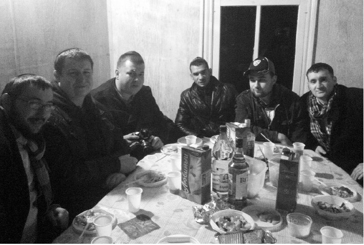
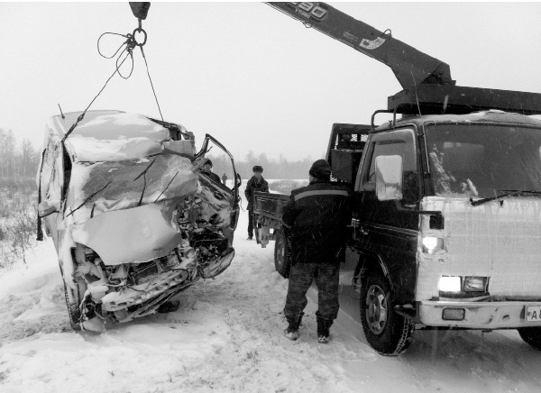

Bringing Authentic Judaism to Russia’s Jewish State
How a native of Birobidzhan became the shliach in this unusual Jewish State .

The history of this area is intertwined with the history of the Jewish people oppressed under communist rule. This area was designated by the Soviet government, in 1928, as a Jewish alternative to Palestine. In 1934, it was given autonomous status and the Yiddish language was declared its official language. Thousands of Jews moved there or were forcibly sent there. The area is 36,000 kilometers long. The winters are cold and dry with lots of snow. Spring is moderate, summers are hot and humid, and the autumn is dry and pleasant. For many years, tens of thousands of Jews lived here, albeit without anything Jewish.
Stalin’s goal was to destroy Judaism, which is why he and his advisors had the idea of bringing Jews to this faraway place, disconnected from other Jewish communities, and constructing a new environment for them. Authentic Yiddish was changed to modern Yiddish; the Hebrew books were in the spirit of the Haskala. The vision was to create a secular, autonomous Jewish region.
The train station of Birobidzhan, which has the name of the town written in both Russian and Yiddish over it, was inaugurated in 1936 and recently renovated. There is a statue in the entrance with a menorah on it, an obvious Jewish symbol. The leadership of Birobidzhan consisted of assimilated Jews and Russian communist party members. The street signs and stamps were written in Yiddish, as was the newspaper.
This all came to an end during the terrible Stalin purges in the years 1936-1938, which signaled the beginning of the end of the Jewish hegemony in the district and caused many to leave. However, until this very day, all the official addresses in the town are written in two languages, Russian and Yiddish. The name of the town and the function of the office appear in Yiddish and Russian on all official documents.
In 1958, Nikita Khrushchev, head of the Soviet Union, admitted in an interview with the French newspaper, Le Figaro, that the plan to settle Jews in Birobidzhan had failed, even though thousands of Jews lived there until the beginning of the 90’s, when many moved to Eretz Yisroel. In the community’s ledgers today, about 2000 Jews are listed, but according to R’ Riss, there are many hundreds more. Part of his shlichus work entails finding them.
R’ Mordechai Scheiner and his wife decided to go to Birobidzhan on shlichus. Nobody was awaiting them. His relationships with the heads of the community were good, thanks to his personality. He did not sit on the “eastern wall” in shul and didn’t even daven there. He had brought a Torah with him and organized a minyan for Shabbos in his home. He got clear signals to stop.
He spent a month in the only hotel in town until he found a suitable apartment. He will never forget the time he spent there and he doesn’t wish it on anybody who succeeds him. Fortunately, the one who took over after him was his student, R’ Eliyahu Riss.
Since R’ Riss and his wife Michal have taken over, there has been a noticeable Jewish awakening, mainly among the young people with whom he has a common language. He arranges shiurim for young and old and he appears on the television program Yiddishkait. Tourists visit Birobidzhan from all over the world, and most of them visit the community and the shul. They realize that Judaism in this town is not just history, but is something alive and perpetuated daily by the Rebbe’s shliach.
RETURNING TO HIS ROOTS
R’ Riss was born in Birobidzhan in 1990. When he was two, his family moved to Eretz Yisroel and settled in Moshav Arnon near Tzfas.
“We lived there for thirteen years. My parents were farmers and were given land on the moshav. For many years they maintained hothouses with roses. I attended public school for four years but didn’t like it. I would go home each day in a bad mood.
“I was raised in a high-minded home which emphasized learning and excellence. I didn’t see this in the school where teachers spent most of their time with discipline problems. The alternatives looked no better and my parents were beside themselves. One day, my father met a neighbor, a Lubavitcher Chassid, who heard my father’s plaint and suggested that he send me to the Chabad School in Tzfas. He promised that I would also learn secular studies there.
“We were not a religious family, but we had respect for tradition and my father agreed. I remember the first day as one of the best. The students, for the most part, learned and read a lot and the conversations were intelligent. The teachers were courteous and very wise; I considered them role models.”
The school changed Eliyahu’s life. From there he went to learn in Migdal HaEmek, but not for long.
“My parents returned from a two week visit to their hometown and announced that we were moving back to Birobidzhan. They sold their business and possessions and I flew back with them to the place that I didn’t really remember.
“Since I wasn’t fluent in Russian, I had private tutors and then my parents registered me in public school. My mother took a job in her field as a theater director and my father was the assistant educational director of the entire district. The crumbs of tradition that had clung to me at home vanished over time, and my friendships with non-Jews threatened to erase my Jewish identity.”
One day, he felt a strong desire for someone to remind him of his Jewish identity. He had heard from his parents about the shliach R’ Mordechai Scheiner, and he wanted to meet him.
“I missed my fellow students in the school in Tzfas, the teachers, the Jewish atmosphere. I turned on the TV and to my amazement, I saw R’ Scheiner talking about the parsha. He spoke well, which intensified my desire to meet him. I pressured my parents and they registered me for his Sunday school.”
For several months, Eli saw the shliach but was shy to talk to him, until Chanuka.
“The shliach’s wife went up to the second floor and asked some of us children to come to the shul where a photo journalist was waiting to take a picture of us with dreidels and a menorah. I volunteered. When the photographer finished, Mrs. Scheiner said we could keep the menorahs but should return the dreidels to her husband who was in the shul.
“I returned the dreidel to the shliach without daring to open my mouth. I was so annoyed with myself. Then I noticed a boy who was still holding a dreidel and didn’t now what to do with it. I ran to the shul and gave it to the shliach and said in Hebrew, ‘Here’s a sevivon, one of the children forgot it.’ R’ Scheiner was surprised by my good Hebrew and he asked me where I was from and what I was doing in Birobidzhan. I became his helper. His children, who only spoke Hebrew, had a new friend. Every Sunday, I was chosen to put t’fillin on with visitors.”
In the summer, R’ Scheiner suggested something that the boy could not refuse, a trip to a Chabad camp in Moscow.
“I was thrilled. I was finishing ninth grade. Camp was two weeks of fun and another two weeks of learning in yeshiva. My parents approved. The atmosphere was wonderful. Although the schedule was intense, I felt it was the best place for me. I stayed on to learn in Yeshivas Tomchei T’mimim in Moscow for three years.
“In the meantime, my parents returned to Eretz Yisroel and settled in Tzur Hadassah. R’ Scheiner left Birobidzhan; throughout these years, I was sent with some other bachurim from the yeshiva to Birobidzhan for Yomim Tovim. The community and its leaders loved me because they saw me as one of them.
“I finished learning for smicha, and after three years of learning I flew to New York to be part of K’vutza. Until then, I had not dreamed of shlichus and thought I would live in a Chabad community when I married. However, being in 770 changed my priorities.”
When he returned to Moscow, he became a teacher in the mechina program. He also began listening to shidduchim suggestions. His condition was that she had to be someone willing to go on shlichus. He was engaged within a year to his wife Michal, and after they married he learned for a year in kollel. At this point, they were at a crossroads. They had an offer of shlichus in America, but the members of the community in Birobidzhan asked him to come to them.
“It was quite a dilemma, but I remembered that Chazal say that the poor of your town take precedence. We decided to go to Birobidzhan.”
YIDDISH WITHOUT YIDDISHKAIT
“We are less than one percent of all those who live in the district, 180,000 people. I’m convinced that the true number of Jews is a lot more than 2000. There are Jews who are not registered in the community’s records and there are some who don’t know that they are Jewish. Nearly every week I come across Jews who say, ‘My mother is Jewish, but I’m not.’ There is ignorance. Judaism won out over the communists, but in the meantime many were lost.”
The early months in Birobidzhan for the newly married couple were not easy. The nearest shliach is R’ Yaakov Snetkov, who is in Khabarovsk, 200 kilometers away. From Moscow, the distance is eight hours by plane till Khabarovsk, and from there, it’s another few hours driving until Birobidzhan.
“We had many dreams about what we would do and how we would do things, but the reality is that the work of shlichus is a complex job, all day, every day. On shlichus there is no vacation; there is no rest on Shabbos. We work around the clock and that is something that takes getting used to.
“My wife went to Moscow from a small city. She got her degrees there in university and all her life dreamed of living in a big city. So much for her dreams … Here we are, in a small distant town. It’s hard. But we are on the Rebbe’s shlichus. There is no kosher grocery store and no Chabad community. We stick it out because of the nachas we give the Rebbe. We tried to quickly recover from the initial shock. My wife started a club for women, and many ladies, even those older than her, consult with her and ask her questions.”
Because of the history of the district, the Jewish community is highly esteemed by the municipal authorities.
“Every high-ranking visitor who comes to the area will be taken by the mayor and his people to the community’s institutions, to the shul and the Jewish museum. Many groups of students who come here from all over Russia, make our shul their first stop. On these visits I discover dozens of Jews who did not know they are Jewish. When I spoke this week to one of these groups, a student who identified as a gentile said that her maternal grandmother was Jewish and was even religious. Of course I informed her that she is Jewish too.”
Since the shluchim arrived the shul has started to be active daily. Jews are in and out throughout the day and there are minyanim daily as well as on Shabbos and Yom Tov. Many people have heard about the significance of their being Jewish for the first time. The shluchim’s arrival is felt throughout the town. In a meeting that took place in Moscow between the governor and Rabbi Lazar, the governor thanked him for the shlichus that is infusing the town with new light and life.
One of the interesting things about the shul in Birobidzhan is the library. “The purpose of establishing the library in the shul was to disabuse the local Jews of the idea that ‘Russia is different.’ The shelves of s’farim are a declaration that nobody has the authority to dictate a new Judaism as the communists tried to do in Birobidzhan. The sole authority is what is written in the Torah, Halacha and Chassidus.”
R’ Riss recalls an interesting incident that took place on Chol HaMoed Sukkos last year, which shows what a change the town has gone through.
“We offered the Dalet minim in the center of the business area where the entrance and exit are guarded by security guards. After we enabled 25 Jews to do the mitzva, we folded everything up, got into our vehicle with the sukka, and headed for the exit. The guard in charge of the parking lot ran toward us. We were sure he wanted money because we had stayed inside for such a long time. How surprised we were when we heard him shouting, ‘I am also a Jew and I even visited Eretz Yisroel!’ When we saw how much Jewish pride we had inspired in him, we decided we had to enable him to do the mitzva too. We stopped the vehicle in the middle of the road, brought him into the sukka, and showed him what to do. We were blocking the road and the cars behind us began honking, but he didn’t care and he yelled, ‘Quiet! Don’t you see I’m doing a mitzva?’ That’s an enormous change; that a Jew in Russia takes pride in doing a mitzva.”
R’ Riss also began giving classes on Chassidus.
“At first, only three people came to the shiur, but then the numbers grew and dozens began to come. There was someone who I invited and he said to me that he only goes to shul on Yom Kippur. One day, he came to the shul while I was giving a shiur. Since then, he does not miss a single one. He also began putting on t’fillin every day.”
In Birobidzhan too, Jews find out about programs and classes via text messages.
“People who were not born and raised in Russia will never appreciate the revolution taking place here. Previously, people came to shul on Rosh HaShana and Yom Kippur but only to socialize. On Rosh HaShana there was a concert in honor of the New Year and on Chanuka they came to eat ponchkes (a Polish pastry). They knew nothing about kashrus, just that it’s good and fresh food. Now, Jews come to daven in shul and attend Torah classes.”
INVESTING IN THE YOUNGER GENERATION
One of the main goals of his shlichus is his work with young people.
“In addition to the classes in the middle of the week, there are programs on Erev Shabbos that are attended by many young people. They gather in shul for the Friday night davening and then the girls walk with my wife to our home where they set up for the meal and she talks to them about Torah and mitzvos. I stay with the boys and learn something on the parsha from the Rebbe’s sichos with them. When we go to the house, we make Kiddush and the boys themselves repeat the d’var Torah.
“A lot has come of this. We see boys and girls when they are first starting out and know zero about Judaism, who today are knowledgeable in the Rebbe’s sichos. A shidduch is currently in the works between a girl who lived with a gentile for years and is now seeing a Jewish boy who is a regular at our house.
“When we work with Jewish youth, our main goal is to save them and prevent assimilation. Sometimes, non-Jews come to us who want to be a part of our community. When they sit in shul we don’t send them away, but we give them no honors and they realize on their own that they don’t belong. The biggest problem is with intermarried families. The typical Russian considers someone with a Jewish father to be Jewish.”
“THE BIROBIDZHANER SHTERN”
The local television program, Yiddishkait, focuses on Jews and Judaism and the shliach talks about the parsha and concepts in Judaism.
“The program is very popular. R’ Sheiner is the one who started it, but he had to pay for each program individually. In recent years, the municipality bought this specific program and pays for the broadcast. They ask me to come and speak on the program and the feedback is very positive.
“We recently had to take our baby to the local clinic for a routine checkup, but we were told that since we were not registered as residents of the town, we could not be treated. ‘We don’t provide treatment or exams for someone who does not live here,’ said the secretary. We didn’t know what to do. How could we explain that we are residents here? They wouldn’t believe us without a signed document. Help came from an unexpected direction. One of the doctors passed by and when she realized what the problem was she smiled. ‘Don’t you know the rabbi?’ she asked the secretary. ‘Of course he lives here; he has a regular spot on the Yiddishkait program.’ Our child promptly got the checkup she needed.”
***
“We are interviewed on television about every holiday and they make a news item out of it which opens the main broadcast. The same is true for the local papers. They ask me to write something up for a special page that they designate for this purpose.”
By the way, in Birobidzhan there are three newspapers and the logo is in Yiddish on all three. There is one called HaKehilla and the most widely read one is called The Birobidzhaner Shtern (Star).
How do you get along with government officials? What do they think about Chabad activity?
“They are very respectful. Not only that, but they also help us. The local government wants Jewish life to flourish here; this is the character they want the town to have because of the tourists. They recently redid some streets and the statues they put up along the walkways were of religious Jews with sentences in Yiddish written underneath. In general, government officials and police officers leave their doors open for us.”
I know that many shluchim in the CIS have run into financial difficulties in recent years. How are you financing your activities?
“Boruch Hashem, there are local donors. R’ Lazar also helps us a lot, and I want to tell you what happened as a result of an accident (see sidebar). A car that we bought was totaled in an accident. As a result of the accident, we had big debts that continued to grow. There were tens of thousands of dollars of debt that I saw no way of paying back. In the meantime, I also had to cover my other activities.
“One day of Chanuka, my wife was in Moscow and I was standing facing the menorah that I had just lit and I pleaded in tears. I looked at the Rebbe’s picture and said, ‘Rebbe, you sent me to this town and now I have a large debt. If I don’t pay it soon, it will only get bigger. Please help me.’ The next day I went to Moscow and told R’ Lazar what was going on. He enlisted the entire community and the mosdos to help me. After a few months the entire debt was paid off down to the last dollar.”
What are your plans for the future?
“First and foremost, you have to remember that we need to maintain what we already have, and it’s a lot. In addition, we have three big plans: a preschool to start in Elul, to build a big Jewish center for which we already received land from the municipality, and to build a mikva.”
R’ Riss asked that we end the article with his thanks to two people, the first being his wife Michal.
“We just visited Eretz Yisroel and I told my wife that maybe we should stay until after Tisha B’Av, but she refused. ‘It’s very enticing,’ she said, ‘but what about the Jews of Birobidzhan?’ Her mesirus nefesh is a tremendous help in this shlichus.
“I would also like to thank R’ Berel Lazar for his help and his nonstop caring. I feel that I can call him at any time with any question. Although he is busy with big and important things, he always finds the time to take an interest in the smallest detail of our shlichus.”
HISTORIC VISIT OF THE PRESIDENT OF RUSSIA TO BIROBIDZHAN
The community in Birobidzhan was excited to host the president of Russia, Dmitry Medvedev.
One can readily understand how excited the Jews of Birobidzhan and all of Russia were at the sight of the president smiling at the children of the community and his looking respectfully at the Sifrei Torah in the shul.
Medvedev’s visit was historic not only for the Jewish community but for the entire town. It is the first time that an acting president visited the town, an event that generated a lot of preparations for weeks in advance. The streets were closed to traffic for a few days before the visit. There was a strong police presence and heightened security for the shul.
Those who are not government officials hardly ever join official presidential visits, but this time, Medvedev’s office contacted R’ Lazar a few weeks before the visit and asked him to come along.
“The president would like to visit the shul and see the Jewish community,” was the message. Indeed, this was the highlight of the visit. During the visit to the shul, the president went with R’ Lazar to see the library. He looked at some ancient Jewish books, Yiddish books with stories of the Baal Shem Tov, Chassidic customs, and more.
The president was then welcomed in the shul sanctuary by a group of children from the community who had prepared a song and presentation on a Jewish topic. The president took great interest in the content of the presentation and even signed his autograph for one of the children who was celebrating a birthday that day. Medvedev told R’ Lazar how pleased he was to see the children of the community flourishing.
The district governor, Alexander Vinnikov, also joined the delegation. He had been elected just two months earlier and is a Jew who is devoted to the development of the Jewish community. He announced that he would designate land near the shul for a mikva to be built, the first in the history of the entire area.
“There is no question that the president feels warmly toward the community,” said R’ Lazar afterward. “He spoke a lot about the work of the rabbis and shluchim who serve in all the communities and how important their work is. He said that he believes that they should be helped in any way possible. He declared that the rabbanim and shluchim are the future of the Jewish community.”
Medvedev’s visit galvanized the work of the Jewish community.
“Jews who until now hesitated to come to shul come proudly, since they have seen how the president has taken an interest in the community,” says R’ Riss.
THE BIG MIRACLE AND THE ANGEL FROM HEAVEN

R’ Eliyahu Riss will never forget last Yud-Tes Kislev:
“I will celebrate this date like my birthday, because on that day, my life was saved from certain death.
“My wife was in Moscow, soon to give birth. I remained in Birobidzhan in order to take care of our Chanuka preparations. I spent the previous Shabbos with the shliach, R’ Yaakov Snetkov in Khabarovsk. 19 Kislev fell out on a Monday and he suggested that I stay on and attend the farbrengen. But there were some urgent matters that I needed to take care of, including a delivery of meat from Moscow. We arranged that I would return to Khabarovsk with some other people on Monday to attend the farbrengen.
“On Monday, I had a list of four people who were going to come with me to the farbrengen, but oddly, hours before the trip, one by one they canceled. I remained with one other person and then he too told me, an hour before the trip, that his wife vetoed his going. I tried to convince her, but she was adamant that he not go.
“This had never happened to me. I found it so strange. I ended up leaving alone. The next day there was a blizzard, but I left for home because I had to set up the menorah in the center of town. R’ Snetkov gave me coins for tz’daka and wished me luck.
“It was extremely difficult driving with minimal visibility. Each vehicle that passed me in the opposite lane sprayed snow on my windshield. After an hour of driving, I stopped the car and said the T’fillas HaDerech. I continued driving another few minutes and then heard an explosion. It was a matter of seconds. The car spun around and then came to a stop in the opposite lane where a passing car hit me and threw me on to the side of the road. I was in shock. Opposite me was a big American truck. The terrifying sound of its air horn still echoes in my ears. I felt myself hovering as around me there was a cacophony of shouts and calls for help.
“When I recovered somewhat, I got out of the car and couldn’t understand why people were backing off from me. I looked at the car that I had just exited and saw that it was totaled. The driver of the truck recovered first and he said that he had called for an ambulance, but had told them they should come to extricate the person who was killed. The rescue people finally showed up and gave me a tranquilizer. They checked me out and saw that I had no injuries whatsoever. One of them, a Christian, said that they believe that every person has a protective angel. ‘Your angel seems to be one of those that sits near the Creator,’ he said. I told him that my protective angel is the Lubavitcher Rebbe whose shliach I am.
“I thought of the astounding hashgacha pratis in that nobody else had joined me on the trip. The place where I had been sitting was the only area that wasn’t destroyed. If people had been sitting in the back or in the front passenger seat, they would not have survived.”
Nosson Avrohom. "Bringing Authentic Judaism to Russia’s Jewish State." Beis Moshiach, no. 891 (August 6, 2013).